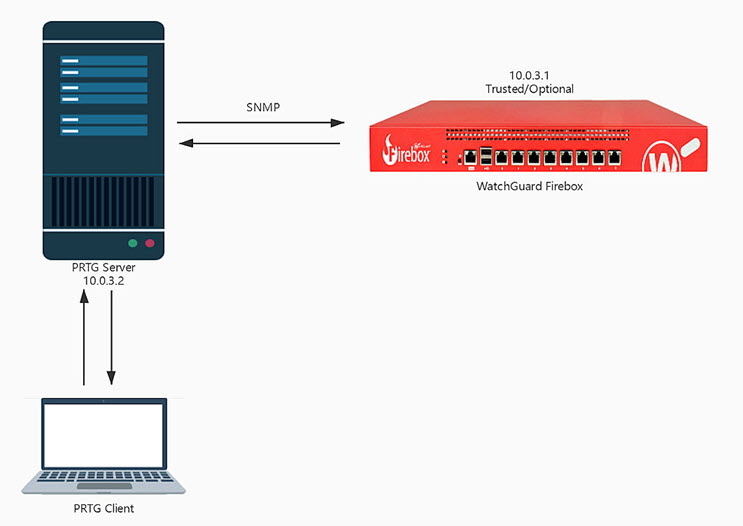

Deployment Overview
PRTG is an RMM (Remote Monitoring and Management) tool commonly used by MSPs. RMM agents are installed on MSP customer endpoints to discover IT assets and remotely monitor and manage them. RMM data is then synchronized to PSA (Professional Services Automation) tools such as Connectwise and Autotask.
Leveraging SNMP v1/2/3 and WMI, the system enables monitoring in combination with powerful alerting and notification capabilities to keep network infrastructure running and provide notification when issues arise.
Integration Summary
The hardware and software used in this guide include:
- WatchGuard Firebox device installed with Fireware v12.7 or higher
- PRTG version 21.2.68.1492 (web login)
- PRTG Server installed in Windows Server 2016 Standard Edition with an IP address of 10.0.3.2
Topology
This diagram shows communication between a WatchGuard Firebox and a PRTG server.

Set Up the Firebox
You must configure SNMP on your Firebox before you can use PRTG to discover the Firebox.
- Log in to Fireware Web UI (https://<your firebox IP address>:8080).
- Select System > SNMP.
- From the Version drop-down list, select v3.
- From the Authentication Protocol drop-down list, select SHA1.
- In the Password and Confirm text boxes, type the authentication password.
- From the Privacy Protocol drop-down list, select DES.
- In the Password and Confirm text boxes, type the encryption password.
- In the User Name text box, type XTM.

- Keep the default values for all other settings.
- Click Save.
- Select Firewall > Firewall Policies > Add Policy.
- From the Packet Filter drop-down list, select SNMP.

- Click Add Policy.
The policy settings page opens. By default, the policy allows SNMP traffic from Any-Trusted to the Firebox. If you connect to an optional interface, specify Any-Optional instead of Any-Trusted.
- Click Save.

Set Up PRTG
- Log in to the PRTG Web UI with an admin account.
- Select Devices > Add Device.

- From the Group list, select Local Probe.
- Click OK.

- In the Add Device to Group Local Probe dialog box, type a Device Name and the IPv4 Address of the Firebox.

- In the Credentials for SNMP Devices section, clear the Inherit from Local Probe check box.
- For SNMP Version, select SNMP v3.
- For Authentication Method, select SHA.
- Type the user name and password you specified on the Firebox.
- For Encryption Type, select DES.
- Type the password you specified on the Firebox.
- Keep the Context Name text box blank.
- Click OK.

- Navigate to Devices tab. The new device is displayed at the bottom of the page.

- In the section for your Firebox, Add Sensor. In our example, this section is named T80.
The Add Sensor to Device [device name] opens. - For Technology Used, select SNMP.

- In the Matching Sensor Types section, select SNMP Custom String.
The Add Sensor to Device Firebox (Step 2 of 2) settings appear.

- In the OID Settings section, type a value for OID.
- Click Create. For PRTG to correctly obtain the Firebox model, name, and version information, you must repeat this step three times to create sensors with these values:
- Firebox (XTM) Device Model OID —1.3.6.1.2.1.1.1.0
- Firebox (XTM) Device Name OID — 1.3.6.1.2.1.1.5.0
- Firebox (XTM) Device Version OID — 1.3.6.1.4.1.3097.6.3.1.0

- Navigate to Devices > [device name]. In our example, the device name is T80.
- In the Recommended Sensors section, click Recommend Now to search sensors for the device. This can take several minutes.

- After the recommendation process completes, click Add These Sensors to auto-deploy sensors to devices.

Test the Integration
- On the Devices page, near the bottom, you will find the Firebox we just added. Click the device name, which is T80 in our example.

- You see the Firebox Version, Firebox Name, Firebox Model and other sensors.

- On the right panel, you can see diagrams with information about Firebox Alarms, Response Time Index, CPU Load Index, and Traffic Index. Each item has three charts to show the statistics in 2 days, 30 days and 365 days.